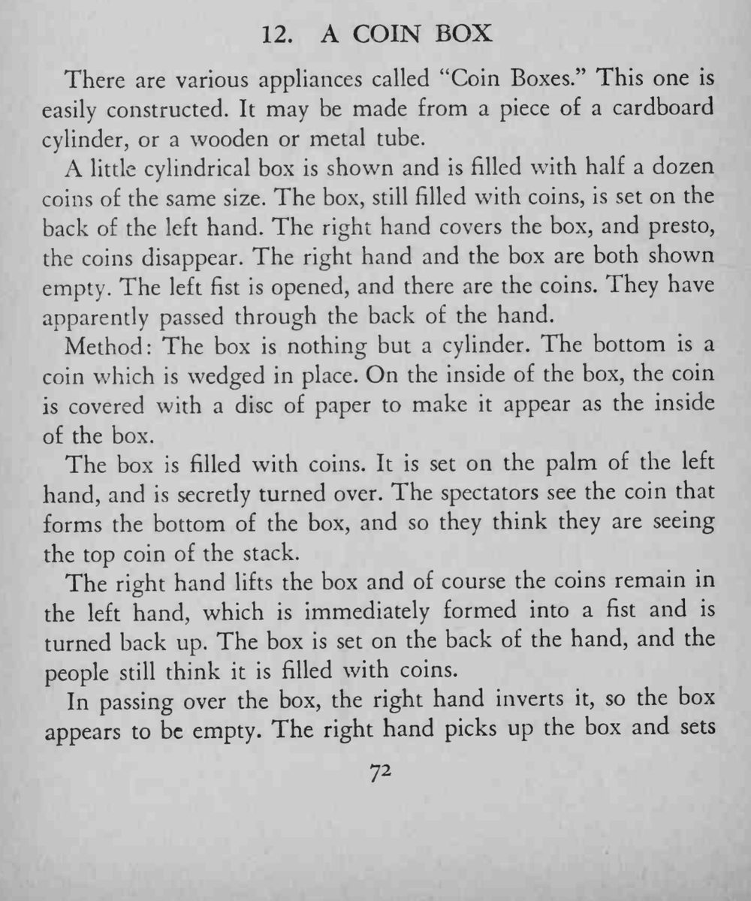
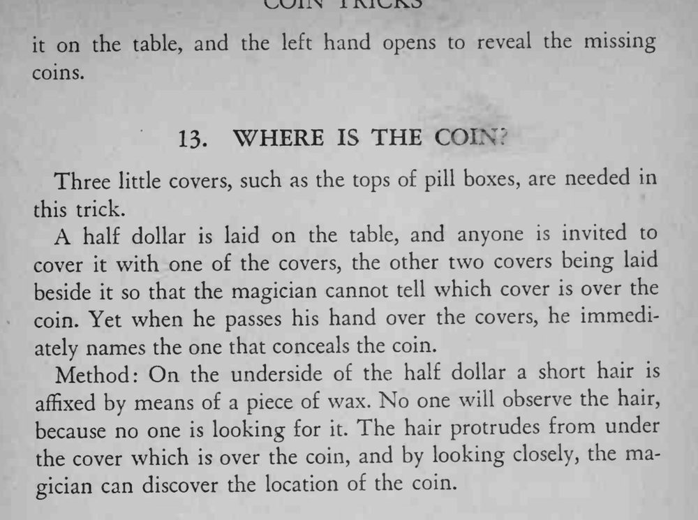

小盒装满硬币，放在左手背上，右手一盖，硬币消失了；右手和盒子都是空的，硬币却全在左手里。
原文末尾另附「三只小盖找硬币」的节目（用头发定位），本卡只整理硬币盒部分。


There are various appliances called "Coin Boxes." This one is easily constructed. It may be made from a piece of a cardboard cylinder, or a wooden or metal tube. A little cylindrical box is shown and is filled with half a dozen coins of the same size. The box, still filled with coins, is set on the back of the left hand. The right hand covers the box, and presto, the coins disappear. The right hand and the box are both shown empty. The left fist is opened, and there are the coins. They have apparently passed through the back of the hand. Method: The box is nothing but a cylinder. The bottom is a coin which is wedged in place. On the inside of the box, the coin is covered with a disc of paper to make it appear as the inside of the box. The box is filled with coins. It is set on the palm of the left hand, and is secretly turned over. The spectators see the coin that forms the bottom of the box, and so they think they are seeing the top coin of the stack. The right hand lifts the box and of course the coins remain in the left hand, which is immediately formed into a fist and is turned back up. The box is set on the back of the hand, and the people still think it is filled with coins. In passing over the box, the right hand inverts it, so the box appears to be empty. The right hand picks up the box and sets it on the table, and the left hand opens to reveal the missing coins. Three little covers, such as the tops of pill boxes, are needed in this trick. A half dollar is laid on the table, and anyone is invited to cover it with one of the covers, the other two covers being laid beside it so that the magician cannot tell which cover is over the coin. Yet when he passes his hand over the covers, he immediately names the one that conceals the coin. Method: On the underside of the half dollar a short hair is affixed by means of a piece of wax. No one will observe the hair, because no one is looking for it. The hair protrudes from under the cover which is over the coin, and by looking closely, the magician can discover the location of the coin.